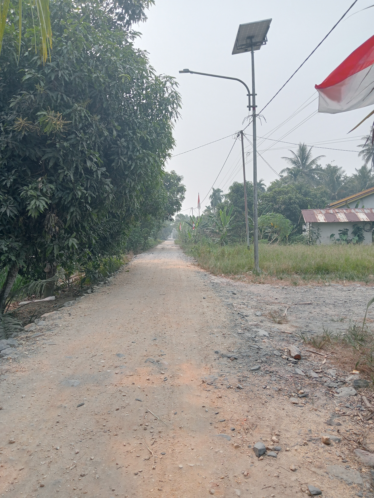

DOKUMENTASI
Galeri Seburing Sungai Palai A

Jalan Desa
Suasana jalan dan lingkungan sekitar Seburing Sungai Palai A.
Lingkungan Desa
Pemandangan hijau dan suasana lingkungan pedesaan.

Sungai Palai A
Gambaran wilayah sd 13 sungai palai a

Kehidupan Masyarakat
Gambaran kehidupan masyarakat di lingkungan pedesaan.